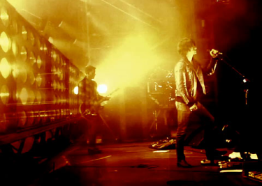
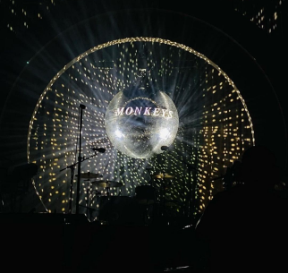
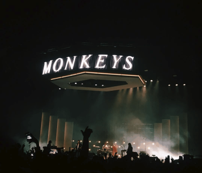

| HOME | ALBOMS | BAND | TOURS |

| HOME | ALBOMS | BAND | TOURS |
Zespół zyskał popularność |
 |
|  | Muzyka Arctic Monkeys to głównie alternatywny rock, indie rock i punk rock. Teksty piosenek są często oparte na codziennych sytułacjach i problemach młodych ludzi. Zespół słynie z charakterystycznego stylu i charyzmy na scenie. |
Do największych przebojów |
 |